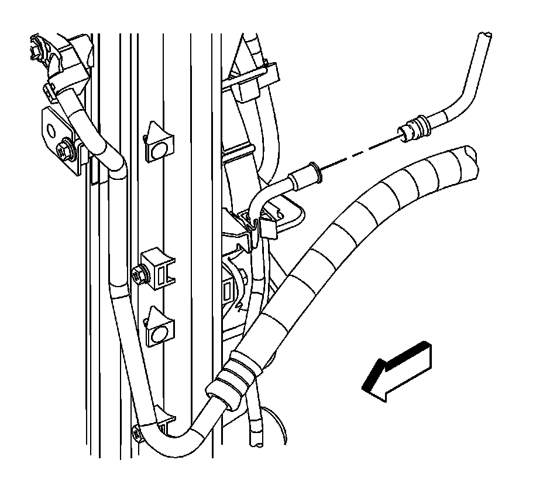
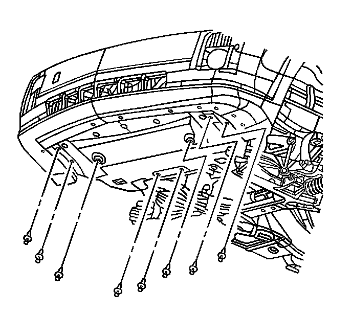
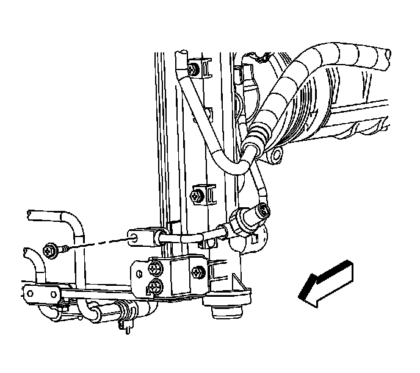

Condenser Tube Replacement
Condenser Tube Replacement
Tools Required
* J 39400-A Halogen Leak Detector
* J 45689 A/C Quick Connect Joint Tool
Removal Procedure
1. Recover the refrigerant. Refer to Refrigerant Recovery and Recharging (Refrigerant Recovery and Recharging) .
2. Remove the air cleaner intake duct. Refer to Air Cleaner Outlet Duct Replacement (Service and Repair) for the 4.6L engine or Air Cleaner Inlet Duct Replacement () for the 3.6L engine.
3. Remove the quick connect fitting at the condenser tube. Refer to Air Conditioning Line/Tube Connector Removal/Replacement (Air Conditioning Line/Tube Connector Removal/Replacement) .

4. Disconnect the condenser tube from the radiator mounting clip.
5. Disconnect the condenser tube from the A/C liquid line.
6. Remove and discard the O-rings on the A/C liquid line.

7. Raise and support the vehicle. Refer to Lifting and Jacking the Vehicle (Service and Repair) .
8. Remove the front air deflector retainers.
9. Remove the front air deflector.

10. Remove the condenser tube bolt.
11. Disconnect the condenser tube from the condenser.
12. Remove and discard the O-ring.
13. Disconnect the high pressure sensor electrical connector.
14. Remove the condenser tube.
15. Remove the high pressure sensor.
Installation Procedure
Notice: Refer to Fastener Notice (Fastener Notice) .
1. Install the high pressure sensor.
Tighten the sensor to 9.8 N.m (87 lb in).
2. Install the condenser tube.
3. Connect the high pressure sensor electrical connector.
4. Install a new O-ring to the condenser tube. Refer to O-Ring Replacement (Service and Repair) .
5. Connect the condenser tube to the condenser.
6. Install the condenser tube bolt.
Tighten the sensor to 9 N.m (80 lb in).
7. Install the front air deflector.
8. Install the front air deflector retainers.
9. Lower the vehicle.
10. Install new O-rings on the A/C liquid line. Refer to O-Ring Replacement (Service and Repair) .
11. Connect the condenser tube to the A/C liquid line.
12. Connect the condenser tube from the radiator mounting clip.
13. Install the condenser tube quick connect fitting. Refer to Air Conditioning Line/Tube Connector Removal/Replacement (Air Conditioning Line/Tube Connector Removal/Replacement) .
14. Install the air cleaner intake duct. Refer to Air Cleaner Outlet Duct Replacement (Service and Repair) for the 4.6L engine or Air Cleaner Inlet Duct Replacement () for the 3.6L engine.
15. Evacuate and recharge the A/C system. Refer to Refrigerant Recovery and Recharging (Refrigerant Recovery and Recharging) .
16. Leak test the fittings of the component using J 39400-A .